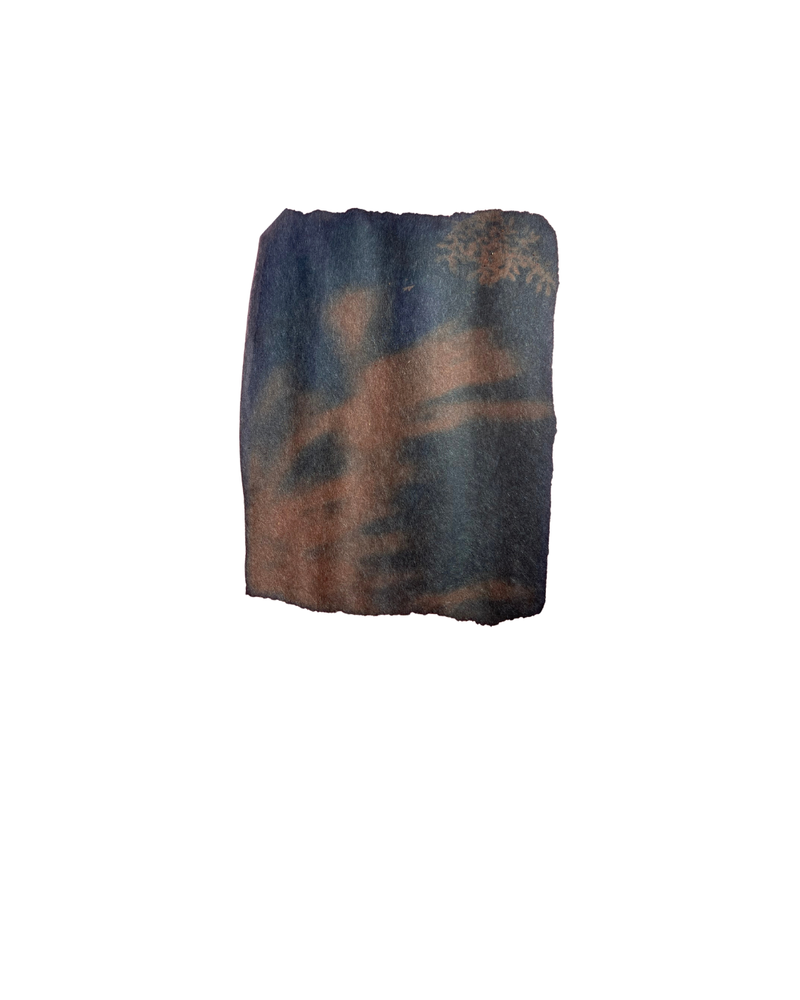
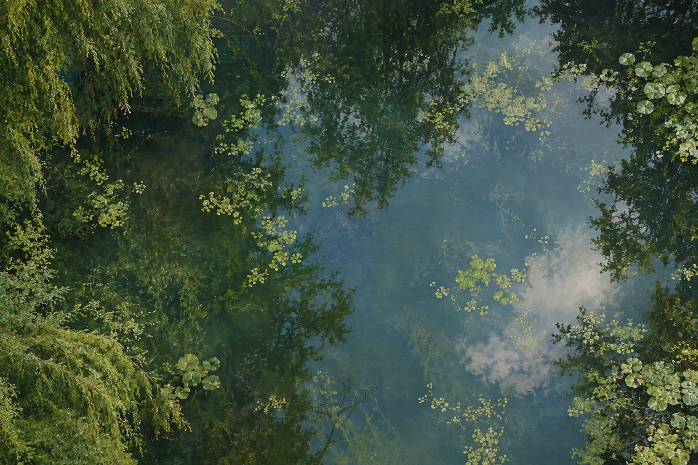

The longer the exposure, the deeper the impression. Cyanotypes A photographic process in which a light-sensitive chemical coating is applied to a surface, then exposed to light through objects or forms to create distinctive blue-toned impressions.

about.
fournfour is a multidisciplinary studio working across experiences, identity, digital, objects, spaces and visual culture. Our process is shaped by research, making and experimentation, collecting references, testing possibilities and building connections. Each project develops through its own process, context and set of relationships.
© fournfour 2026
lab.
© fournfour 2026
underconstruction
© fournfour 2026
want to work with us?